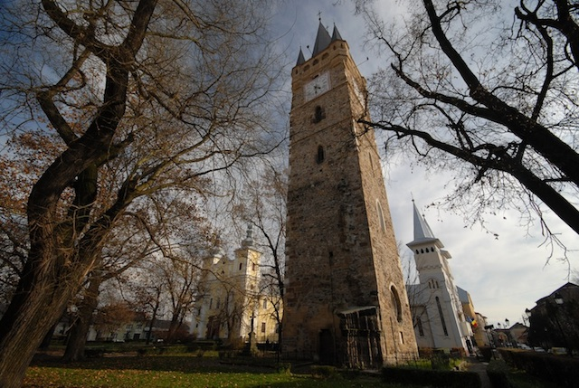
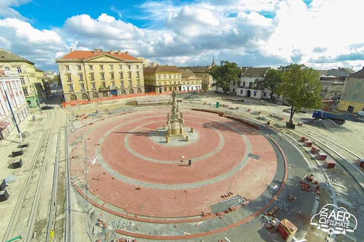
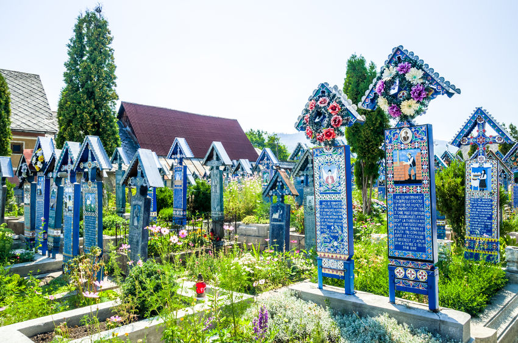
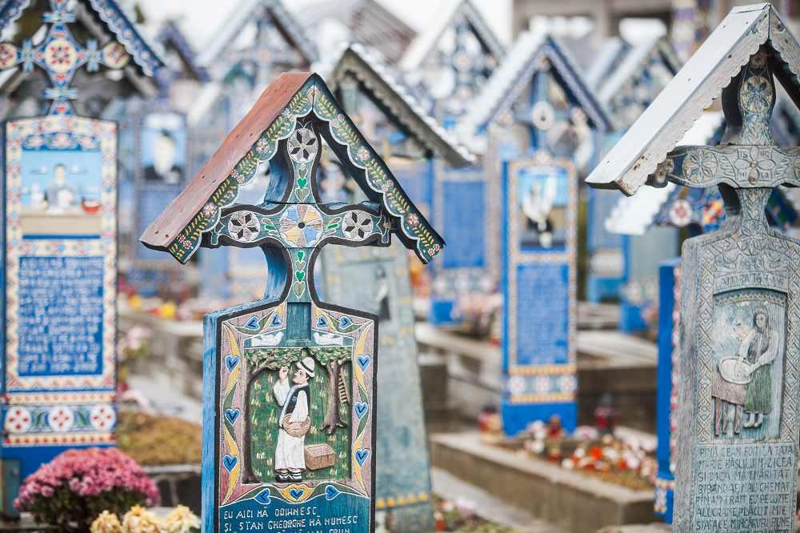
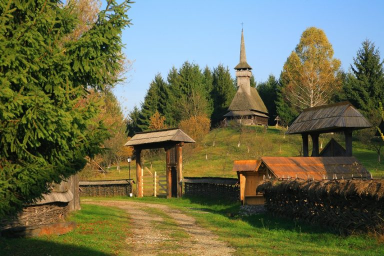

Inalt de 40 de metri, turnul este ultima ramasita a unei biserici construita in stil gotic. Cu trei scari de piatra ce duc catre varf, turnul cu ceas este simbolul orasului Baia Mare si adaposteste doua clopote, fiecare dintre peretii sai deosebindu-se prin blazoane sau basoreliefuri
Mărețul edificiu nu este doar un important obiectiv istoric, ci a devenit un reper cultural la sfârșitul anilor '90, când în acest spațiu s-au desfășurat manifestarea Poezia din turn (la inițiativa actorului băimărean Paul Antoniu). Atât exponenții Școlii băimărene de pictură, cât și alți artiști plastici de renume au fost fascinați de silueta bătrânului turn cu orologiu și pridvor țărănesc la mansardă, motiv pentru care a fost imortalizat, din diferite unghiuri, în memorabile opere de artă.
Piaţa Libertăţii este fără îndoială cea mai veche dintre pieţele Timişoarei.Locaţia Pietei Libertatii este şi amplasamentul nucleului iniţial de la care a pornit evoluţia Timişoarei, primul loc în care s-au aşezat oamenii şi au locuit continuu pe vatra oraşului actual.Pe latura de nord a pieţei, terenul este mai ridicat decât pe latura de sud. Terenul mai înalt reprezenta limita de sud a zonei uscate din nordul oraşului. Latura de sud a pieţei actuale se află pe locul de unde începea zona mlăştinoasă, aşazisul “bazin mlăştinos” Timiş-Bega.
Cimitirul vesel de la Sapanta – Arta lemnului pe teritoriul Romaniei a atins conotatii creative de cea mai inalta calitatea, in zona Maramuresului.
In acest spatiu inchis, inconjurat de Muntii Carapati, s-a dezvoltat o adevarata civilizatie e lemnului care a incercat nu doar sa dea o functiune obiectelor create, ci si o estetica aparte. Probabil acelasi lucru s-a intamplat si cu unul din mesterii maramureseni, care a lasat mostenire o adevarata comoara – Ioan Stan Patras.
 Sculptor de cruci si artist, acesta a hotarat sa treaca peste abordarea traditionala in realizarea unei cruci de lemn. Om simplu, religios si cu frica de Dumnezeu, a inteles ca moartea face parte din viata. Acest lucru l-a determinat sa nu mai privesca moartea cu rigiditatea cu care suntem obisnuiti.Muzeul Etnografic maramureșan este format din Secția Pavilionară și Secția în aer liber, cunoscută și ca Muzeul Satului.Secția pavilionară a Muzeului Etnografic din Baia Mare a fost înființată în anul 1964. Aceasta include mai multe obiecte de patrimoniu provenite din cele patru zone istorice ale județului: Ţara Chioarului, Ţara Lăpuşului, Ţara Codrului şi Ţara Maramureșului. Printre obiectele expuse aici se află: instrumente folosite în agricultură, instalații tehnice, colecții de ceramică și de obiecte de cult, precum și colecții de costume populare și materiale folosite în casă.
Muzeul Satului, secția în aer liber a Muzeului Etnografic, a fost înființat în anul 1984 și este amplasat pe Dealul Florilor. Acesta se întinde pe o suprafață de 6 hectare pe care sunt amenajate grupuri gospodărești și anexele lor, provenite din cele patru zone istorice din nordul țării: Ţara Chioarului, Ţara Lăpuşului, Ţara Codrului şi Ţara Maramureșului. Printre cele mai cunoscute ansambluri gospodărești expuse aici se află: bisericile de lemn din satul Chechiș, gospodăria Borșa, gospodăria Prislop sau casa Petrova.